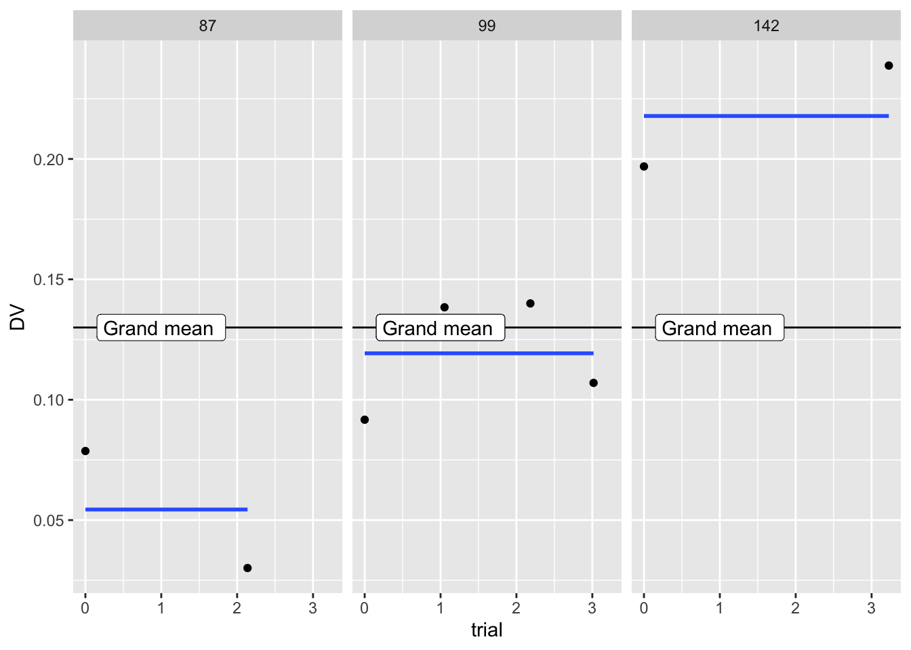
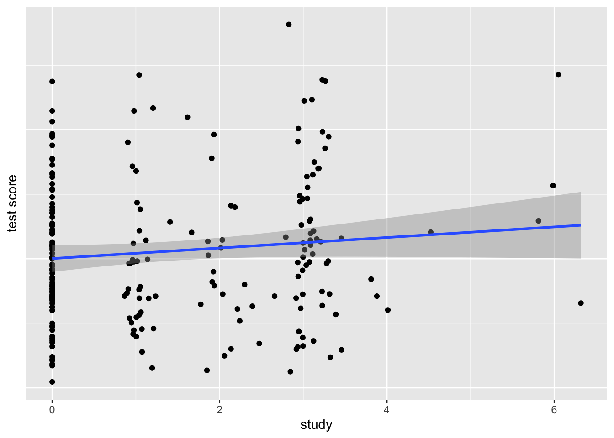
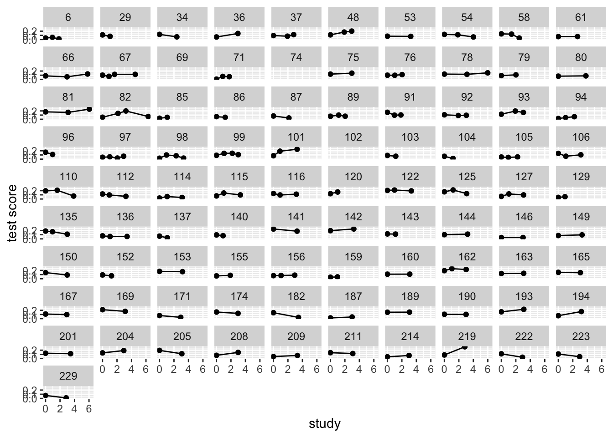
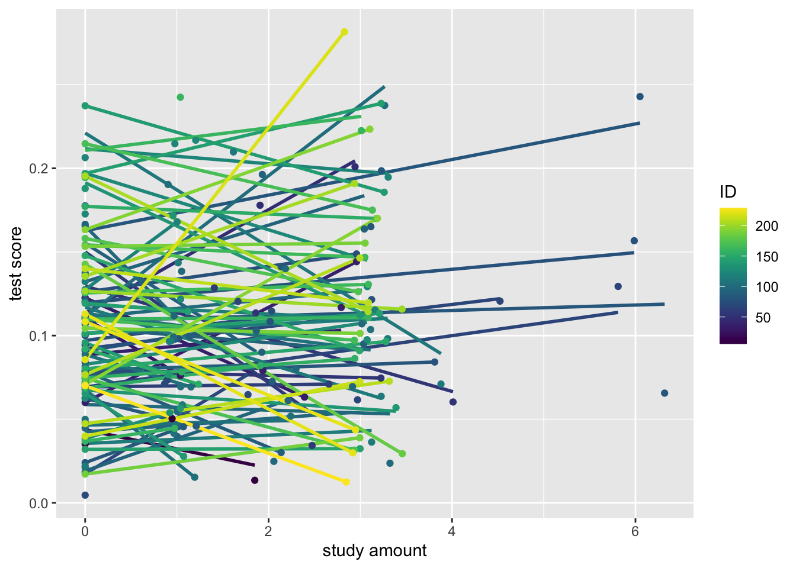

\(\beta_{0}\) is my average for congruent trials, whereas \(\beta_{1}\) is my difference between congruent and incongruent.
If we do that for everyone in the study, we have a vector of scores that represent j people’s average RT for congruent trials \(\beta_{0j}\) and another vector of score that represent j peoples difference between conditions \(\beta_{1j}\).
People are going to differ on each of these – some will be faster, some will have a larger vs smaller stroop effect.
We can then run more regressions using these coefficients (\(\beta_{0j}\) & \(\beta_{1j}\)) as DVs. For example, do instructors (0) or students (1) have faster congrunent trials?
Our B1 coefficient indexes people’s slope, and can be thought of as a simple vector of scores. This vector can be a DV and can be decomposed further by a simple regression. There is some average effect (fixed effect) that serves as the intercept. The \(U_{j}\) are like residuals.
Rows: 225 Columns: 50
── Column specification ────────────────────────────────────────────────────────
Delimiter: ","
chr (17): group, Exclude, RSNexclude, RSNexcludeDevDem, PIBpos18, Neuro_Dx,...
dbl (30): ID, time, CON, CON_SAL, CON_SMN7, DAN, DAN_CON, DAN_SAL, DAN_SMN7...
date (3): date, CogDate_0, CCIRtrio_MR_date_0
ℹ Use `spec()` to retrieve the full column specification for this data.
ℹ Specify the column types or set `show_col_types = FALSE` to quiet this message.
g2<-ggplot(example2,aes(x = week, y = SMN7, group = ID)) +geom_point() +stat_smooth(method="lm", formula=y~1, se =FALSE) +facet_wrap( ~ID) +geom_hline(yintercept = .13) +ylab("DV") +xlab("trial") +geom_label(label="Grand mean ", x=1,y=.13,label.size =0.15) g2

3. Diferent levels
The third way is to think of questions at different levels. Level 1 is the smallest unit of analysis (students, waves, trials, family members). We can ask questions about those levels
Level 2 variables are what level 1 variables are “nested” in (people, schools, counties, families, dyads). We can ask separate questions about those questions.
What direction will the \(\gamma_{01}\) coefficient be? \(\gamma_{10}\)?
4. Variance decomposition
For standard regression, we think of error as existing in one big bucket called \(\varepsilon\) . Everything that we do not know goes into that bucket, from measurement error to unmeasured important factors.
For MLMs we will be breaking up ( \(\varepsilon\) ) into multiple buckets. These useful “buckets” (Us) are what we refer to as random/varying effects.
Thinking about MLM as two separate regressions, these can be conceptualized as residuals. Thinking about variance decomposition, these can be thought of as similar to ANVOA models.
Assume a simple regression model where we ignore person deviations across trials to estimate a stroop effect. The stroop effect is the same, but what do we do with all the variance we did not measure? It goes into the error bucket.
An MLM model, in contrast, models person specific deviations. The result is that the error bucket is smaller! Tests are more powerful this way, and we have new variables we can use to understand.
We will treat random effects as variables themselves e.g. individual differences in change. They index how much people DIFFER on some effect.
\(U_{0j}\) is considered a random effect, as it is varies across our grouping
\(\gamma_{00}\) is considered a fixed effect, as it is what is fixed (average) across our grouping
5. Shrinkage/partial pooling
We treat our group variable as coming from a population. All groups are alike (because they are from the same population), but different in their own way. Because of this it is helpful to use information from other groups to help make predictions.
We do this in standard regression where we make predictions based on values from the whole dataset (not just binned Xs). A similar analogy for MLM is running a regression for each group. We want to pool as this leads to better predictions as we are not over fitting our data!
Complete, partial and no pooling
Complete assumes everyone is the same, with \(U_{0i}\) being zero for everyone.
No pooling is if we calculate every person’s effect with a regression, subtracting out he grand mean average.
Partial pooling is in the middle, a weighted average between the two. For those with fewer trials there is less information for a particular individual, thus the complete pooling estimate will be given more weight. If someone has a lot of data, there weighted average is closer to no pooling.
Partial pooling prevents both over and under fitting of your data, leading to increased out of sample predictions.
Complete pooling
Ignores any dependency. Doesn’t learn from others, assumes everyone is the same. Underfits the model.
Warning: Removed 9 rows containing non-finite outside the scale range
(`stat_smooth()`).
Warning: Removed 9 rows containing missing values or values outside the scale range
(`geom_point()`).

No Pooling
Everyone is unique and we cannot learn from others. Leads to overfitting
Code
ggplot(mlm, aes(x = week, y = SMN7, group = ID)) +geom_line() +geom_point() +facet_wrap( ~ ID) +ylab("test score") +xlab("study")
Warning: Removed 9 rows containing missing values or values outside the scale range
(`geom_line()`).
Warning: Removed 9 rows containing missing values or values outside the scale range
(`geom_point()`).

Partial pooling aka shrinkage aka regularization
Code
library(viridis)
Loading required package: viridisLite
Code
ggplot(mlm, aes(x = week, y = SMN7, group = ID, colour = ID)) +stat_smooth(method ="lm", se =FALSE, alpha = .5) +scale_color_viridis()+ylab("test score") +xlab("study amount") +geom_point()
`geom_smooth()` using formula = 'y ~ x'
Warning: Removed 9 rows containing non-finite outside the scale range
(`stat_smooth()`).
Warning: Removed 9 rows containing missing values or values outside the scale range
(`geom_point()`).

Partial pooling aka shrinkage provides the optimal amount of learning from others. Assumes people come from the same distribution but are distinct from one another.
If you have a little data, then the safe bet is to look at the average. If you have a lot of data, you can ignore others.
The following objects are masked from 'package:tidyr':
expand, pack, unpack
Code
mlm.1<-lmer(N_A.std ~1+ (1| record_id), data = melsm)summary(mlm.1)
Linear mixed model fit by REML ['lmerMod']
Formula: N_A.std ~ 1 + (1 | record_id)
Data: melsm
REML criterion at convergence: 25971.5
Scaled residuals:
Min 1Q Median 3Q Max
-5.7139 -0.4720 -0.0275 0.4220 8.0264
Random effects:
Groups Name Variance Std.Dev.
record_id (Intercept) 0.5199 0.7210
Residual 0.4026 0.6345
Number of obs: 13033, groups: record_id, 193
Fixed effects:
Estimate Std. Error t value
(Intercept) -0.03041 0.05231 -0.581
Code
mlm.2<-lmer(N_A.std ~1+ steps.pmd + (1| record_id), data = melsm)summary(mlm.2)
Linear mixed model fit by REML ['lmerMod']
Formula: N_A.std ~ 1 + steps.pmd + (1 | record_id)
Data: melsm
REML criterion at convergence: 25950.5
Scaled residuals:
Min 1Q Median 3Q Max
-5.7373 -0.4723 -0.0237 0.4188 8.0521
Random effects:
Groups Name Variance Std.Dev.
record_id (Intercept) 0.5213 0.7220
Residual 0.4017 0.6338
Number of obs: 13033, groups: record_id, 193
Fixed effects:
Estimate Std. Error t value
(Intercept) -0.028303 0.052374 -0.540
steps.pmd -0.039809 0.007382 -5.393
Correlation of Fixed Effects:
(Intr)
steps.pmd -0.007
Code
mlm.3<-lmer(N_A.std ~1+ steps.pmd + (1+ steps.pmd| record_id), data = melsm)summary(mlm.3)
Linear mixed model fit by REML ['lmerMod']
Formula: N_A.std ~ 1 + steps.pmd + (1 + steps.pmd | record_id)
Data: melsm
REML criterion at convergence: 25909.9
Scaled residuals:
Min 1Q Median 3Q Max
-5.7784 -0.4695 -0.0218 0.4162 8.0778
Random effects:
Groups Name Variance Std.Dev. Corr
record_id (Intercept) 0.523536 0.72356
steps.pmd 0.005855 0.07652 -0.30
Residual 0.398168 0.63101
Number of obs: 13033, groups: record_id, 193
Fixed effects:
Estimate Std. Error t value
(Intercept) -0.028260 0.052491 -0.538
steps.pmd -0.039353 0.009898 -3.976
Correlation of Fixed Effects:
(Intr)
steps.pmd -0.172